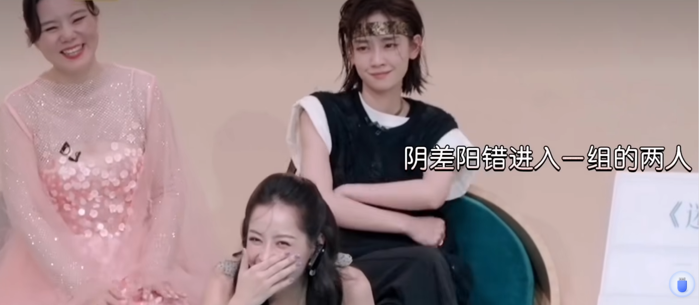
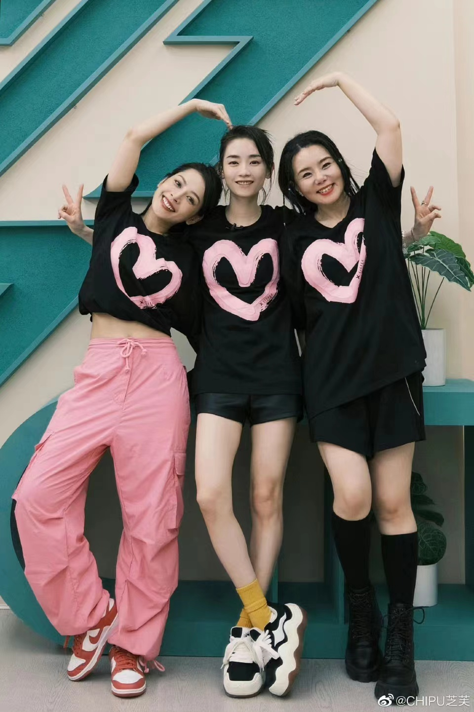
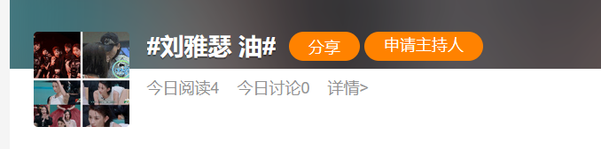
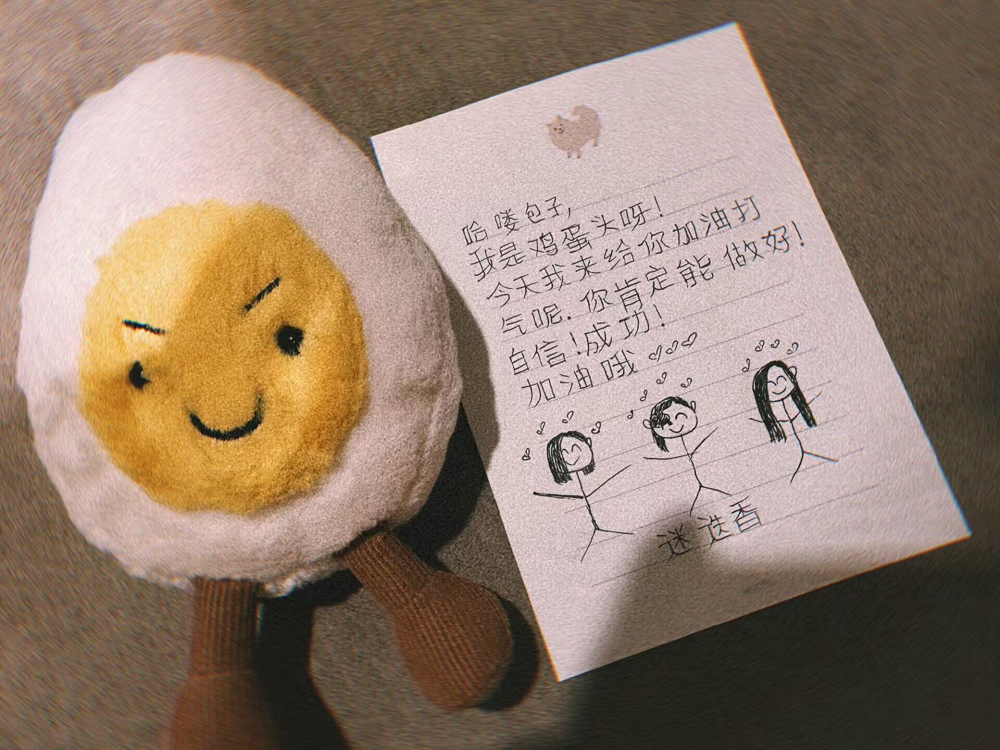

TIMELINE of ChiFe
Real Time
TV Time

0417
- 二公分组

0424
- se打领带与pu双人舞
- lina姐视频，pu手把脚se打鼓，并对se说了”my best friend's part"


0502
- pu的手机壁纸设成了seC位的迷迭香三人组合照
- pu要se解释为什么说她像包子，并让她小心一点（越南古早采访：如果爱人惹你生气怎么办？pu:我会让TA小心一点）
- pu教se越南语：我是笨蛋；se教pu中文：我是湘妹子，美女
- pu躲门后吓se，后抬腿踢se，se紧张到多次按电，电梯贴身双人舞


0505
乘风2023第一期播出，对应姐姐的时间线0403

0510
#se 油# 上热搜了
0513-0514
一公播出

0521
- pu给se手写信

0522
- se发超话，pu送的包子早餐
- pu发微博说se说她像包子（姐姐时间线0430）
- pu IG晒翻译器笨蛋聊天
- 芙瑟超话成立
0523
- 房腻宁女士的vlog，pu se手搭背挨坐在一起
- se被替位，pu表情严肃
- pu抓娃娃被se捣乱增加难度，se凑上前：不敢说话”
- 拉吧组爆料，实锤se最想抱pu和留宿pu
0524
- 补录迷迭香练习室，瑟穿pu的裤子（pu“质问”工作人员：why yase？“）
- putictok发二公迷迭香上台前两人视频
- se发同样的，文案首次写蛋🥚

0526
- pu评论se IG：you are amazing,很多越南粉丝喜欢你（ps：se的IG评论越南的芙瑟粉丝在狂舞）
- pu 评论se 0525的dy：Baoziiii
- 二公播出！拉票环节，pu跺脚求助se
0607
- 11：00 pu微博发黑白心
- 18：30左右 seIG晒上影节造型配文黑白心（10分钟后，pu评论：你为什么这么美，请回答我，请用越南语回答我）
- 18：30左右 seIG晒上影节造型配文黑白心（10分钟后，pu评论：你为什么这么美，请回答我，请用越南语回答我）
- 又过8分钟后，发ins快拍露出金包子手链
- 20：50左右se在红毯外掏出手机回了两个表情，随后将IG头像更改为pu说美的造型，又点赞了一圈越南cp粉的疯狂评论
- 21：25 se删除评论的表情，用越南语回谢谢，回复另一位姐姐的给约么则是：地址发我啊
0612
- puIG发佩戴金包子手串去杭州喝茶视频，se速赞
- pu微博晒佩戴金包子手串去杭州喝茶照片
- 14：35 se超话发“每天脑袋不清醒，哪有心情观赏夜景[哭],我决定先睡两天先~~”
- pu IG快拍西湖游船视频
- pu dy发与IG相同的去西湖喝茶视频
0613 se评论：中国还有很多美丽的地方，记得去看看 - pu小红书发合照
- 极限拉扯
- pu FB发三公跳迷迭香拉票练习视频